Projects
Defence technology, homelab infrastructure, web development, games, and applications, 68 projects total.
Portfolio map (68 projects across 5 sections)
flowchart LR
ALL["68 Projects"] --> DEF["Defence and Sovereignty Tech\n32"]
ALL --> INF["Homelab and Infrastructure\n16"]
ALL --> WEB["Web Development\n13"]
ALL --> GAM["Games\n1"]
ALL --> APP["Applications\n6"]
DEF --> DEFH["11 hardware builds\nsky, water, ground, airspace"]
DEF --> DEFS["12 software builds\ndigital twin, DevOps, fusion,\nblack box, supply chain, LENTUS"]
DEF --> DEFHUB["Program hub"]
INF --> INFK["Kubernetes cluster\n7 nodes, 9 services"]
INF --> INFP["Proxmox zero-trust cloud\nself-hosted services"]
style ALL fill:#1a1a2e,stroke:#5B93EF,color:#e0e0e0
style DEF fill:#1a1a2e,stroke:#ff4444,color:#e0e0e0
style INF fill:#1a1a2e,stroke:#00d4ff,color:#e0e0e0
style WEB fill:#1a1a2e,stroke:#00ff88,color:#e0e0e0
style GAM fill:#1a1a2e,stroke:#E6C947,color:#e0e0e0
style APP fill:#1a1a2e,stroke:#aa88ff,color:#e0e0e0
Defence & Sovereignty Tech
32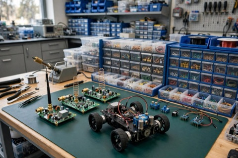
2026 · Hardware · Program Hub
Canadian Defence Hardware Program
Eleven hands-on hardware builds across sky, water, and ground, each mapped to a stated DDI or MINERVA requirement, with full BOMs, prices, step-by-step guides, and bench photos.
Read more
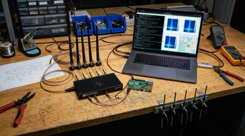
2026 · Hardware · In Progress
Sky: Passive Aerial Early-Warning Node
Receive-only passive radar on a KrakenSDR 5-channel coherent SDR: FM/TV reflections off aircraft, range-Doppler processing with pyAPRiL, scored against an RTL-SDR ADS-B ground-truth receiver.
Read more
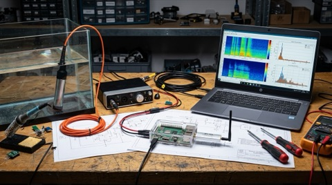
2026 · Hardware · In Progress
Water: Passive Acoustic Vessel Monitor
Solar-powered hydrophone node classifying passing vessels from underwater sound, with an RTL-SDR AIS receiver as ground truth and a dock-to-recharge extension.
Read more

2026 · Hardware · In Progress
Ground: Seismic & Acoustic Perimeter Mesh
Solar 915 MHz LoRa mesh of ESP32 nodes with ADXL355 accelerometers and geophones, classifying vehicles vs footsteps vs wind at the edge and reporting signed detections.
Read more
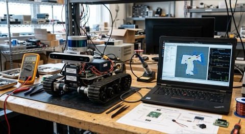
2026 · Hardware · In Progress
GPS-Denied Navigation Rover
ROS 2 rover fusing wheel odometry, BNO085 IMU, and 2D LiDAR with an Extended Kalman Filter; GNSS gets switched off and position drift is measured against a u-blox ground-truth track.
Read more
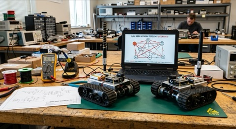
2026 · Hardware · In Progress
Convoy-Following Robots on a Degraded Mesh
Two rovers convoy behind a lead vehicle over a 915 MHz LoRa / Wi-Fi mesh, hold formation through induced link drops, and recover on reconnect, the resupply-convoy DDIL problem at bench scale.
Read more
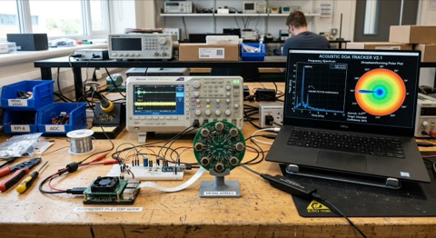
2026 · Hardware · In Progress
Passive Acoustic Drone Detector
MEMS microphone array on a Raspberry Pi detecting rotor harmonics, rejecting birds and aircraft, and estimating direction of arrival by beamforming, emits nothing, only detects.
Read more
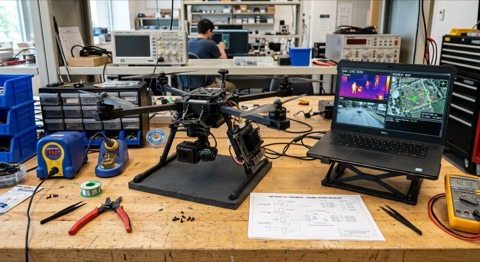
2026 · Hardware · In Progress
Thermal Search-and-Rescue Drone
X500-class quadcopter with a FLIR Lepton thermal camera and Hailo AI HAT+ edge detection finding people in snow and brush, pushing georeferenced detections to a live map.
Read more
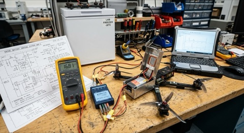
2026 · Hardware · In Progress
Cold-Soak Battery Characterization Rig
Heated, instrumented drone battery bay tested in a lab freezer and real Canadian winter, runtime, voltage sag, and failure modes logged against temperature as a published dataset.
Read more
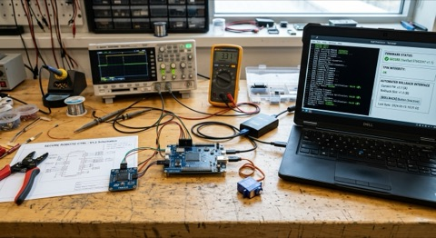
2026 · Hardware · In Progress
Secure Robot-Fleet Updates
Secure boot, TPM 2.0 measured boot, YubiKey-signed OTA updates, and automatic A/B rollback for the robot fleet, validated in a cold chamber and under power-cut chaos tests.
Read more
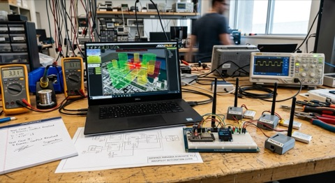
2026 · Hardware · Simulation
Mini Airspace Deconfliction Manager
ESP32 tracker beacons plus ArduPilot SITL simulated drones, dynamic 3D geofences, predicted-conflict alerts, and a human-in-the-loop override for every resolution.
Read more
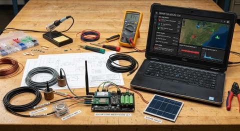
2026 · Software + Hardware · In Progress
Multi-Domain Common Operating Picture
The fusion layer: nodes publish signed detections over MQTT/Zenoh, buffer through dead links, a Kalman-filter tracker fuses air, water, and ground tracks, and a human makes every decision. Chaos-tested.
Read more
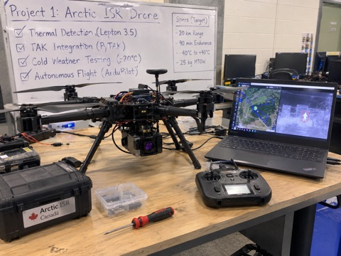
2026-2027 · Hardware · Planned
Arctic ISR Drone
Cold-weather ISR drone build guide against the MINERVA Arctic UAS spec: heated battery bay, Lepton thermal detection measured in pixels-on-target, TAK output, glove-operable controls.
Read more
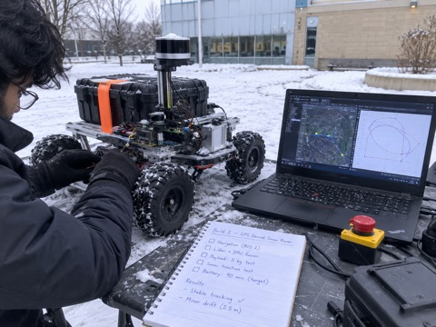
2026-2027 · Hardware · Planned
GPS-Denied Cargo Ground Vehicle for Snow
Snow UGV build guide against the MINERVA cargo and surveillance specs: LiDAR-inertial odometry, EKF slip handling, payload and energy sweeps, RTK as ground truth only.
Read more
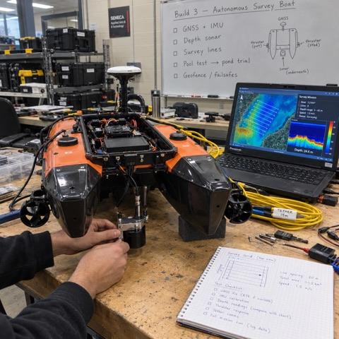
2026-2027 · Hardware · Planned
Autonomous Seabed-Survey Boat
USV build guide: ArduPilot Rover lawnmower survey lines, Ping echosounder depth logs, gridded seabed models, and anomaly detection scored against planted targets.
Read more
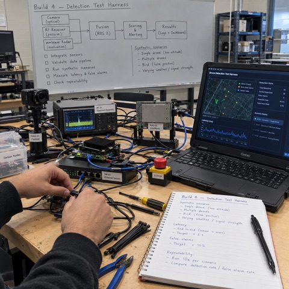
2026-2027 · Software · Planned
Counter-Drone Test-and-Scoring Harness
Sensor scoring harness build guide: SAPIENT (BSI Flex 335) interfaces, TAK bridge, scenario cards mirroring the IDEaS sandbox, Stone Soup metrics, Monte Carlo coverage planner.
Read more
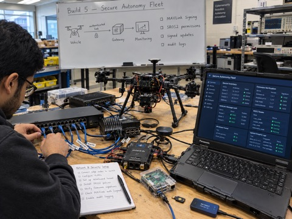
2026-2027 · Security · Planned
Secure Autonomy for the Robot and Drone Fleet
Fleet hardening build guide: STRIDE threat model, MAVLink 2 signing, Ed25519 signed firmware, SROS2 enclaves, WireGuard links, pymavlink IDS, signed A/B updates.
Read more
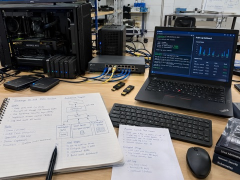
2026-2027 · Software · Planned
Sovereign AI and Data Enclave
Secure private-AI build guide on the Chakor stack: Keycloak identity, OPA and OpenTDF policy, HSM-backed OpenBao keys, label-filtered pgvector retrieval, tamper-evident audit.
Read more
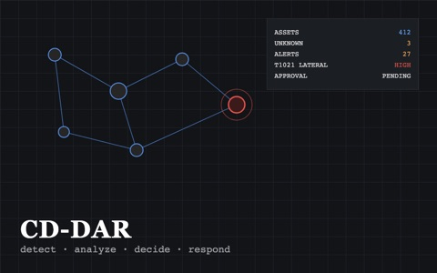
2026-2027 · Cyber · In Progress
CD-DAR Testbed: AI-Assisted SOC
AI-assisted SOC shaped by DND's CD-DAR project: detection rules, incident correlation, a local LLM that explains incidents with checked evidence, human-approved response.
Read more
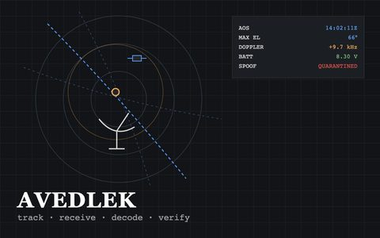
2026-2027 · Space · In Progress
AVEDLEK Testbed: Northern Satellite Ground Station
Ground station shaped by DND's AVEDLEK project: pass prediction, a software radio, telemetry decoding, ML anomaly detection and spoofing checks.
Read more
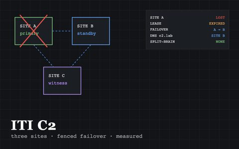
2026-2027 · Infrastructure · In Progress
ITI C2 Testbed: Three-Site Resilient Infrastructure
Three-site lab shaped by DND's ITI in Support of C2 project: K3s, Longhorn, cross-site database replication, fenced failover, measured recovery.
Read more
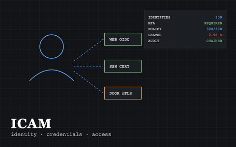
2026-2027 · Identity · In Progress
ICAM Testbed: Identity, Credentials and Access
Identity platform shaped by DND's CAF ICAM project: Keycloak with MFA, OpenBao certificates, OPA policy for web, servers and badge doors, hash-chained audit.
Read more
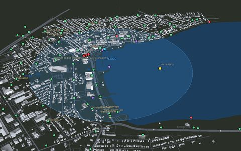
2026-2027 · Simulation · In Progress
CASE Testbed: Synthetic Environment and Digital Twin
Digital twin shaped by DND's CASE project: an OpenStreetMap town, 95 sensors, floods and plumes, two sites over DIS, ROS 2, and AI that tells faults from events.
Read more
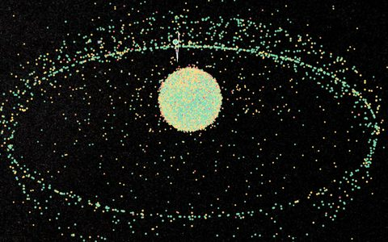
2026-2027 · Space · In Progress
Space Surveillance Testbed: Tracking the Catalogue
Shaped by DND's Surveillance of Space 2: 21,310 objects from public data, conjunction screening matched to SOCRATES, measured uncertainty, a GEO watch and an optical sensor.
Read more
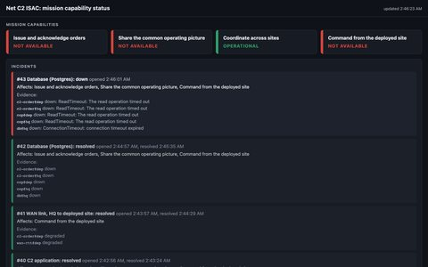
2026 · C2 · In Progress
Net C2 ISAC Testbed: IT Health to Mission Impact
Shaped by DND's Net C2 ISAC: probes at two sites, root-cause inference and mission impact for commanders; 36 of 36 injected faults caught, the right cause named first every time.
Read more
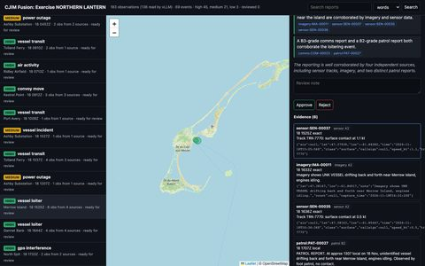
2026 · Intelligence · In Progress
Multi-Source Intelligence Fusion with vLLM
Five synthetic sources fused into one picture on a laptop: vLLM reads the free text, events carry provenance and NATO-grading confidence, and analysts review cited summaries. Event types right 92.4% vs 64.8% for keywords.
Read more
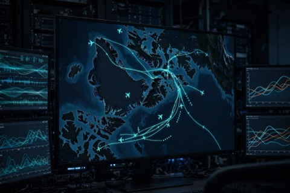
2026 · In Progress
Arctic Domain Awareness Digital Twin
Streaming pipeline fusing open ADS-B aircraft data, AIS ship tracking, and Sentinel-1 radar imagery over Canada's North, flagging dark vessels and route deviations.
Read more
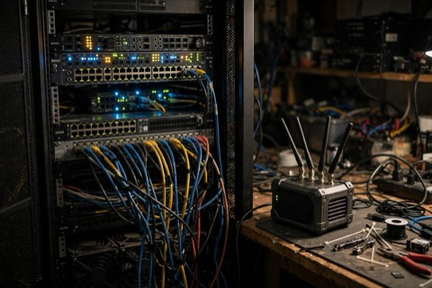
2026 · In Progress
DDIL-Proof DevOps
CI/CD and telemetry that keep working through denied, degraded, intermittent, and limited links: store-and-forward, delta updates, signed artifacts, k3s edge nodes, chaos-tested with tc netem.
Read more
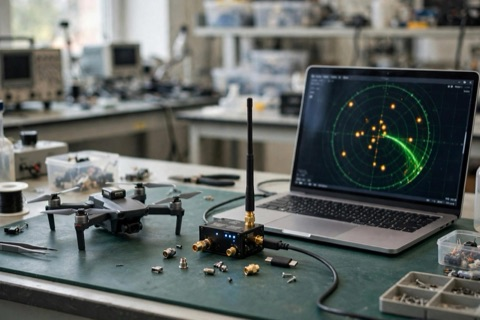
2026 · In Progress · Simulation
Counter-Drone Sensor Fusion Simulator
Synthetic radar, RF, acoustic, and camera tracks fused with Kalman filters, confidence scoring, and human-in-the-loop alert triage. Defensive, simulation only.
Read more
2026 · In Progress
Decision Black Box
Tamper-evident audit layer for human-in-the-loop decisions: hash-chained signed append-only log, replay tool, and OPA policy-as-code checks.
Read more
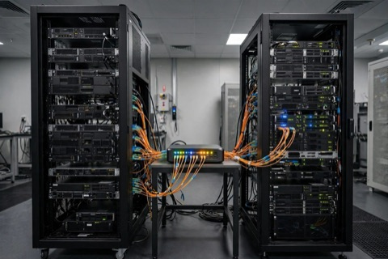
2026 · In Progress
Zero-Trust Air-Gapped Software Supply Chain
SBOM, sigstore signing, and reproducible builds moved across a simulated one-way transfer into an offline registry, mapped to Canadian Centre for Cyber Security guidance.
Read more
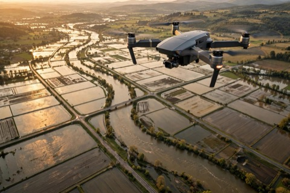
2026 · In Progress · Simulation
Operation LENTUS-Style Disaster Response Drone Mapping
Simulated drone flights mapping floods and wildfires, edge computer vision detecting affected areas, and a live situational-awareness map, with OR-Tools route optimization.
Read more
Homelab & Infrastructure
16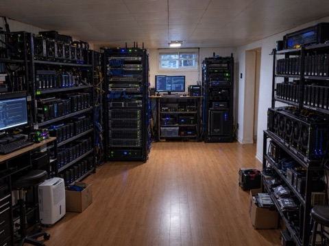
2025 to 2026 · Physical Build
Homelab Server Room
The cozy basement server room behind everything on this site: racked desktop and laptop Proxmox hosts, managed switching with VLAN trunking, wireless backhaul, power, and cooling.
2026 · Open Source
Chakor, Self-Hosted AI Workspace
Open-source AI workspace you run yourself. Local and cloud models, web search, document chat, model compare, notes, and memory, all private on your hardware.
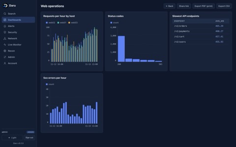
2026 · Open Source
Daru, Self-Hosted Log Analytics and SIEM
Open-source SIEM in one Go binary plus ClickHouse: log search, dashboards, alerts, incident triage, syslog, an append-only audit trail, and live packet capture.
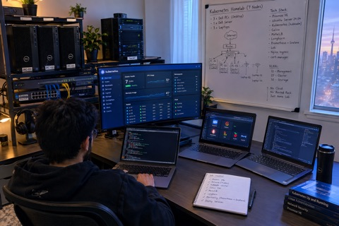
2025 to 2026 · On-Premises Cluster
Kubernetes Infrastructure
Production-grade multi-node K8s cluster across 7 VM nodes on Proxmox hosts, with VLAN segmentation, Calico CNI, MetalLB, Longhorn storage, and Prometheus + Grafana observability.
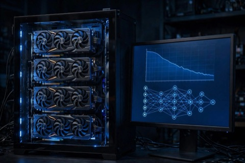
2026 · ai.tyfsadik.org
TYF-AI (private AI, Ollama)
Self-hosted LLM with integrated web search. Full data privacy, no cloud subscription.
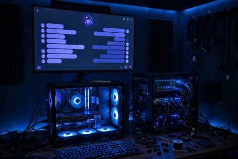
2026 · Security
TYF-AI, Self-Hosted Local AI Security Platform
Hardened local AI inference: llama.cpp with CUDA, Open WebUI behind authenticated Caddy proxy, per-model Firejail sandboxing, and GPU passthrough on Proxmox.
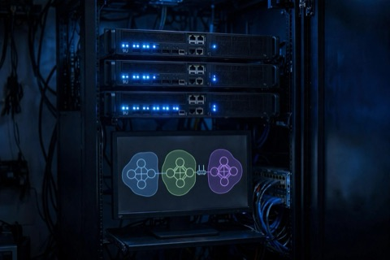
2025 to 2026 · Zero Trust
Proxmox VE Zero-Trust Private Cloud
3-node Proxmox HA cluster with Ceph, VLAN segmentation, and zero public ingress via Cloudflare Tunnel with Tailscale fallback and automated ZFS snapshots.
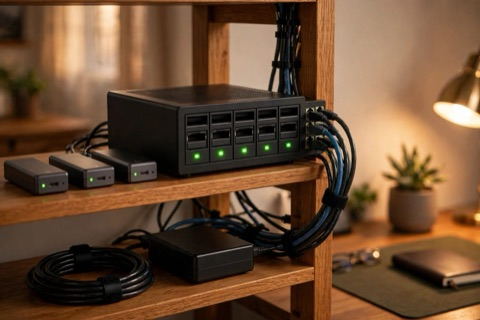
2025 to 2026 · Privacy
Data Sovereignty & Secure Media Stack
Self-hosted Nextcloud + Immich on BTRFS external SSDs with multi-user ACL isolation and a 3-2-1 offsite backup pipeline to BorgBase and rsync.net.
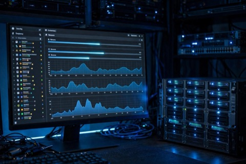
2025 · GitHub
Proxmox Homelab
Full virtualization infrastructure for testing servers, VMs, containers, and network configs.
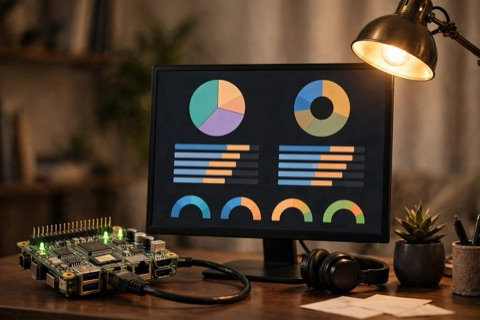
2025 · GitHub
Self-Hosted DNS
Network-wide ad/tracker blocking with Pi-hole and recursive DNS resolution via Unbound.
2025 · GitHub
Private Email Server
Self-hosted SMTP/IMAP with Postfix + Dovecot on custom domain @tyfsadik.org.
2025 · cloud.tyfsadik.org
Self-Hosted Cloud Storage
Private Nextcloud instance replacing Google Drive. Syncs files across all devices.
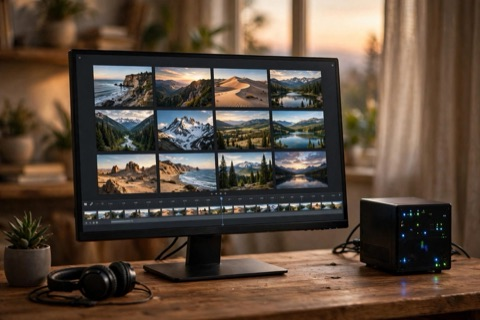
2025 · photo.tyfsadik.org
Immich (photo server)
Personal photo management with ML face recognition and mobile auto-backup.
2024 · search.tyfsadik.org
Public Search Engine
Privacy-respecting search engine aggregating results from multiple sources without tracking.
2024 · wiki.tyfsadik.org
Kiwix (wiki mirror)
Full Wikipedia mirror accessible to users in countries with restricted internet access.
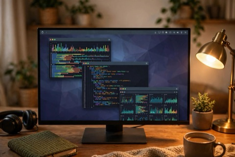
2025 · GitHub ★ 5 Stars
Arch Linux Remote Desktop via WSL2
Full Arch Linux + XFCE remote desktop through WSL2 without router port forwarding changes.
Web Development
132023 · GitHub ★ 4 Stars
HomeBound Aisha
Business website for a home-based service provider. Responsive, client-delivered.
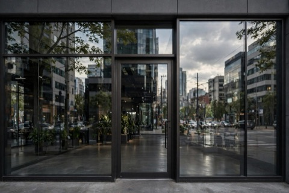
2023
GTA High Glass
Website for a glass and glazing company in the Greater Toronto Area.
2023
Hakimi Fruits
Online presence for a fruit and produce business with product listings.
2023
Faiaz Shisha
Multi-page website for a shisha lounge with flavour menu and booking info.
2026
Pharmacy Website
Medical/pharmacy website with product listings and service information.
2022
Birthday Project
Interactive birthday celebration page with CSS animations and JavaScript effects.
2022 to 2024
Practice Apps
TypeScript and web development practice projects (app_2_kimi, heda1, heda2).
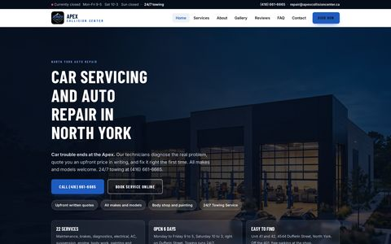
2026
Apex Collision Center
38-page auto repair site for a North York shop, generated by a custom Python build.
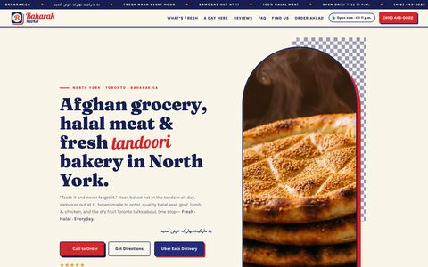
2026
Baharak Market
One-page site for an Afghan grocery, halal butcher and naan bakery in North York.
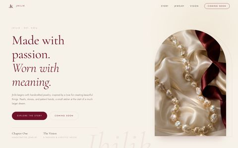
2026
Jhilik
Launch site for a handcrafted pearl and stone jewelry brand.
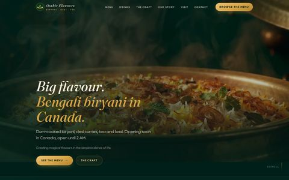
2026
Osthir Flavours
Bengali biryani restaurant site built with Astro and deployed by GitHub Actions.
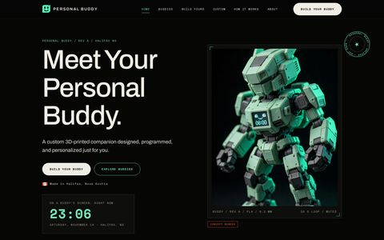
2026
Personal Buddy
React and Vite product site for a made-to-order 3D printed robot desk companion.
2026
Felixous Technology
Next.js site for a managed IT and cybersecurity firm, with free scanners and a shop.
Applications
62026
Polish for OBS
Free, open-source OBS plugin for Windows, macOS and Linux: skin smoothing, makeup, face shape, 17 colour looks, background blur or replacement and face-tracked stickers, with no watermark.
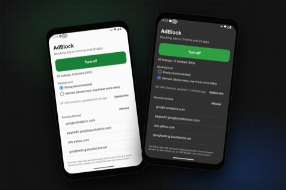
2026
Mobile Chrome AdBlock
Blocks ads in Chrome on Android and iPhone, where extensions are not allowed, by filtering DNS on the phone against about 400,000 ad and tracker domains.
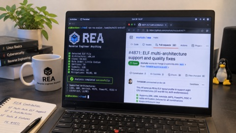
2026
REA (open-source contribution)
Extending REA's ELF layout analysis, an MCP reverse-engineering tool, from x86-64 to eight CPU architectures.
2023
GateArch
Student portal and admin system with course management and user authentication.
2023
TaxGlobe
Web application for calculating taxes across different jurisdictions with clear breakdowns.
2023
Wonder Learning
E-learning platform with course listings, video embeds, and educational interface.